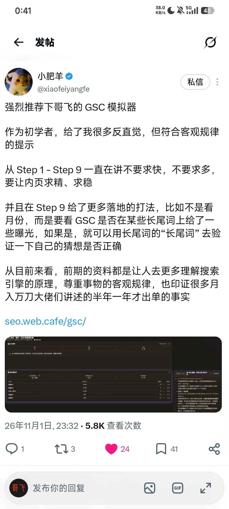

2026 年 11 月 3 日凌晨，哥飞在群里对新进群的朋友说：这几个模拟器一定要玩。消息里给了三个入口，分别对应 GSC 数据、谷歌搜索结果和 SEO 经营过程，随后还附了一张群友的推荐截图。
三个模拟器入口
哥飞没有展开每个模拟器怎么玩，原话只有一句「新进群的朋友们，这几个模拟器，一定要玩呀」。三个链接都指向 web.cafe 的模拟器页面。
附图：初学者用 GSC 模拟器得到的提示
消息后面附了一张截图，是 @xiaofeiyangfe（小肥羊）在 X 上推荐哥飞 GSC 模拟器的帖子，发布于 2026 年 11 月 1 日 23:32。他的评价集中在「不求快、不求多」这件事上。
- 作为初学者，模拟器给了很多反直觉、但符合客观规律的提示。
- Step 1 到 Step 9 一直在讲不要求快、不要求多，要让内页求精、求稳。
- Step 9 给了更多落地打法：不是看月份，而是看 GSC 是否在某些长尾词上给了曝光；如果有，就可以用长尾词的「长尾词」去验证自己的猜想是否正确。
- 前期的资料是让人更多理解搜索引擎的原理、尊重客观规律，也印证了很多月入万刀的大佬讲述的「半年一年才出单」。

这条帖子本站已完整镜像：强烈推荐哥飞的 GSC 模拟器。
原始对话
聊天记录（2 条）
参与者 1 人：哥飞 · 时间范围 2026年11月3日 00:43 · 原始 2 条，保留 2 条